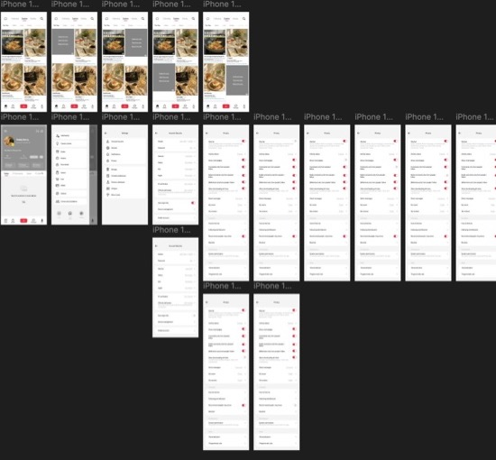
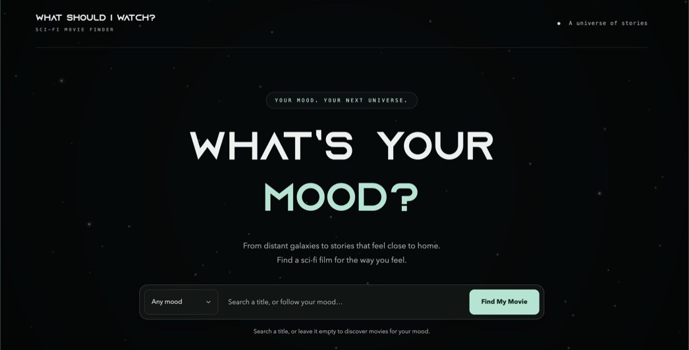

UX research & prototyping
Xiaohongshu Data Transparency
A concept redesign that helps Xiaohongshu users find privacy controls and understand how their activity shapes recommendations and ads.
Interaction design · UX/UI · Product design
I design digital experiences that make information easier to understand and decisions easier to make.
↓
UX research & prototyping
A concept redesign that helps Xiaohongshu users find privacy controls and understand how their activity shapes recommendations and ads.

Interaction design & dynamic data
A sci-fi movie finder that uses six moods and live TMDB data to make choosing a film feel a little easier.
About me
I’m an Interaction Design student at Sheridan College. My background in graphic design and 3D modeling shapes how I think about the way information looks, feels, and moves on a screen.
When a task feels complicated, I start by looking for the decision a person is trying to make. From there I can work out what information they need, when they need it, and which choices are getting in the way.
I use wireframes and prototypes to make those choices visible and test them. Feedback helps me see where a path that felt obvious to me needs clearer labels, a more visible entry point, or fewer steps.
View résumé